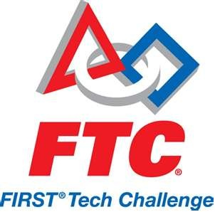

|  |
|
MissionFTC is designed for those who want to compete head-to-head, using a sports model. Teams of up to 10 students are responsible for designing, building, and programming their robots to compete in an alliance format against other teams. The robot kit is reusable from year-to-year and is programmed using a variety of languages. Teams, including coaches, mentors and volunteers, are required to develop strategy and build robots based on sound engineering principles. Awards are given for the competition as for well as for community outreach, design, and other real-world accomplishments. |